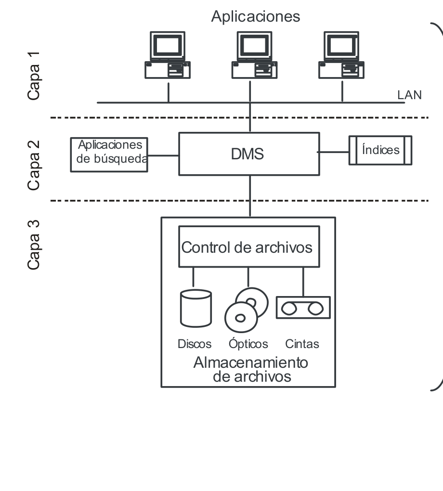
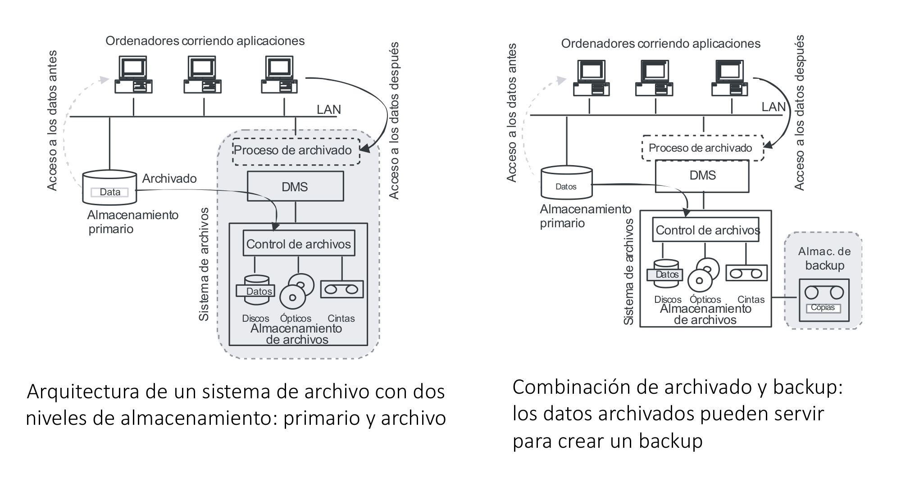

Archivado de la información
Temas de ENCO · 12/13
- 1. Formatos de Servidores - Racks y Blades
- 2. Centros de Procesamiento de Datos (CPDs)
- 3. Virtualización de Servidores
- 4. Dispositivos de Almacenamiento
- 5. Subsistemas de Disco
- 6. Fibre Channel y redes SAN
- 7. Almacenamiento IP
- 8. Sistemas de ficheros y almacenamiento en red
- 9. Virtualización del almacenamiento
- 10. Backup
- 11. Backup en red y software para backup
- 12. Archivado de la información
- 13. Hardware para backup
12.1 Qué es archivar
Archivar es guardar durante largos periodos datos que ya no van a cambiar. No es lo mismo que el backup (ver tema 10):
- El backup sirve para recuperar lo que se pierda, así que se hace con frecuencia, y su contenido queda obsoleto con el tiempo porque deja de reflejar los datos en uso.
- El archivado congela los datos: cada archivo representa el estado del sistema en un momento dado y nunca queda obsoleto, aunque haya muchos posteriores, porque cada uno es una versión distinta.
| Característica | Backup | Archivado |
|---|---|---|
| Propósito | Protección de datos | Retención y conservación |
| Vigencia | Corta: 1 día a 1 año | Larga: 5, 10, 30 años o más |
| Cumplimiento legal | No suele exigirse | Normalmente obligatorio |
| Datos originales | Coexisten con los backups | El archivo sustituye a los originales |
| Nº de versiones | Múltiples | Una |
| Medio | Transferencia rápida, reutilizable, barato | Robusto, WORM (escribir una vez, leer muchas), posiblemente barato |
| Lectura | Alta velocidad | Respuesta rápida, velocidad media |
| Búsqueda | Por nombre de fichero | Por contenido |
¿Por qué archivar? Para cumplir la legislación y normativas, reducir costes (sacando los datos archivados de la red de almacenamiento cara) y preservar la información.
12.2 Arquitectura de archivado
Se propone una arquitectura en tres capas:
- Aplicaciones, donde se crean los datos.
- Gestión de archivos, el DMS (Document Management System), con índices y aplicaciones de búsqueda.
- Almacenamiento de archivos: un control de archivos sobre discos, ópticos y cintas.

Con dos niveles de almacenamiento, los datos viven primero en el almacenamiento primario y el proceso de archivado los mueve al de archivo; después, las aplicaciones acceden a ellos a través del DMS. Además, archivado y backup se pueden combinar: los datos archivados pueden servir para crear un backup.

12.3 Borrado de archivos
A menudo la ley obliga a borrar los archivos pasado cierto tiempo, y algunas normas no aceptan los métodos más débiles:
| Método | Seguridad | Uso |
|---|---|---|
| Borrar la metainformación y reutilizar el soporte | Débil | Cómodo para discos y cintas |
| Borrar la metainformación y borrar el soporte antes de reutilizarlo | Algo más segura, más lenta | |
| Borrar la metainformación y destruir físicamente el soporte | La más segura (hay normas sobre su eficacia) | Cintas y ópticos |
12.4 Casos de archivado
- Correo electrónico: gestionando los buzones (los correos antiguos pasan al archivo y se sustituyen por enlaces), mediante journaling (se archivan todos los correos, p. ej. MS Exchange, y siguen también en el buzón) o una combinación de ambos (ocupa más disco). Además: gestión de duplicados y archivado avanzado con el DMS.
- Ficheros:
- Accediendo al archivo como a un sistema de ficheros (NFS, CIFS/SMB): simple y estándar, pero aislado y limitado.
- Con un conversor de protocolo que pasa los ficheros al sistema de archivado; integrable con HSM (Hierarchical Storage Management).
- Con el DMS (normalmente junto al conversor): indexa los archivos y los clientes no acceden directamente al almacenamiento. Muy seguro, pero complejo.
- Sistemas ERP (Enterprise Resource Planning: SAP, Oracle e-Business Suite, Microsoft Dynamics…): información muy heterogénea (BD, documentos, correos); suelen traer sus propias utilidades de archivado, con o sin DMS.
- Datos hospitalarios: historiales e imágenes DICOM que deben guardarse décadas. Sin DMS es simple pero limitado; con DMS se pueden vincular historiales e imágenes.
12.x Ideas clave
- Archivar = congelar datos que no cambian, durante años (5–30+), normalmente por obligación legal; el archivo sustituye a los originales, una sola versión, búsqueda por contenido, medios WORM. Backup = protección, corto plazo, varias versiones.
- Motivos: ley, costes, preservación.
- Arquitectura en 3 capas: aplicaciones → DMS → almacenamiento (discos, ópticos, cintas). Archivado y backup se pueden combinar.
- Borrado: solo metainformación (débil), + borrar soporte, + destruir soporte (más seguro).
- Casos: correo (buzones, journaling), ficheros (sistema de ficheros, conversor + HSM, DMS), ERP, hospitales (DICOM).